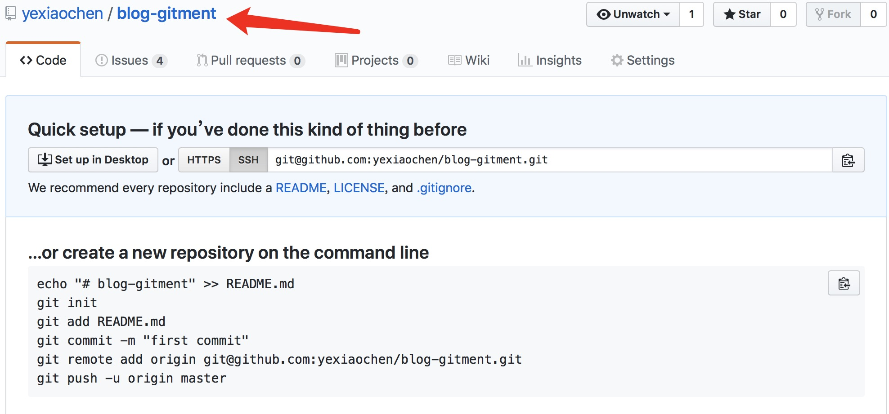
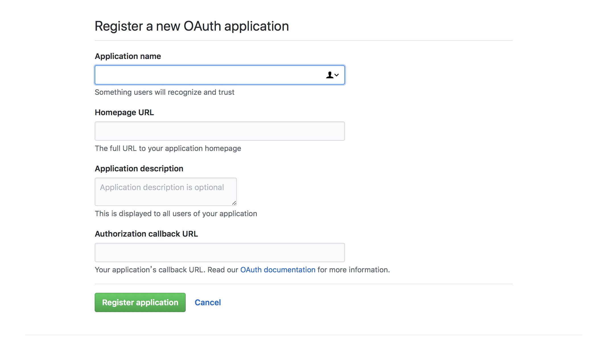
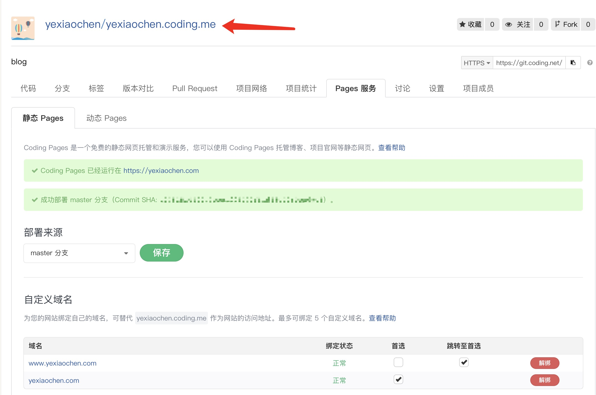
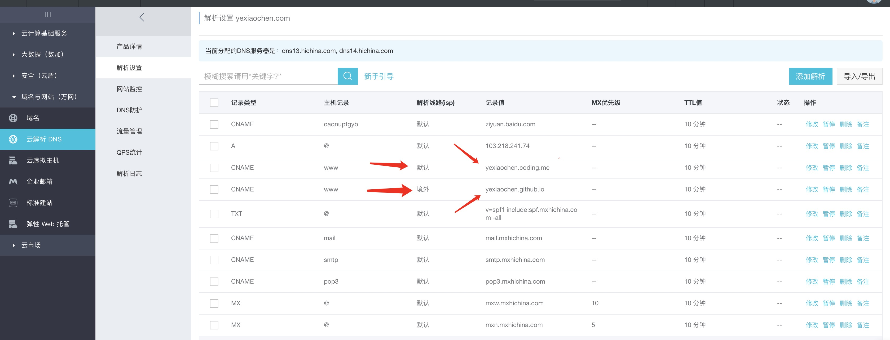

<!DOCTYPE html><html class="theme-next mist" lang="zh-Hans"><head><meta name="generator" content="Hexo 3.9.0"><meta charset="UTF-8"><meta name="baidu-site-verification" content="dil57BBbBc"><meta http-equiv="X-UA-Compatible" content="IE=edge"><meta name="viewport" content="width=device-width,initial-scale=1,maximum-scale=1"><meta name="theme-color" content="#222"><link rel="manifest" href="/manifest.json"><link rel="stylesheet" media="all" href="/lib/Han/dist/han.min.css?v=3.3"><meta http-equiv="Cache-Control" content="no-transform"><meta http-equiv="Cache-Control" content="no-siteapp"><meta name="google-site-verification" content="YH32omENY7b_BdEuIWv46jSBK-0Vyw_dWbJTGNBblT0"><link href="https://cdn.jsdelivr.net/gh/tonsky/FiraCode@1.206/distr/fira_code.css" rel="stylesheet" type="text/css"><link href="/lib/font-awesome/css/font-awesome.min.css?v=4.6.2" rel="stylesheet" type="text/css"><link href="/css/main.css?v=5.1.4" rel="stylesheet" type="text/css"><link rel="apple-touch-icon" sizes="180x180" href="/images/favicon.ico?v=5.1.4"><link rel="icon" type="image/png" sizes="32x32" href="/images/favicon.ico?v=5.1.4"><link rel="icon" type="image/png" sizes="16x16" href="/images/favicon.ico?v=5.1.4"><link rel="icon" type="image/png" sizes="16x16" href="/images/favicon.ico?v=5.1.4"><link rel="icon" type="image/png" sizes="16x16" href="/images/favicon.ico?v=5.1.4"><link rel="icon" type="image/png" sizes="16x16" href="/images/favicon.ico?v=5.1.4"><meta name="keywords" content="Hexo,Next,coding,部署,DNS,"><meta name="description" content="博客已经搭建好了,自然可以趁热打铁写一些博客搭建的经验.一是方便自己以后查看,免得忘记.二是如果有人想了解博客搭建的过程,也正好有个参考.(如果SEO做的好,就有可能看到这篇文章).本文仅记录怎么去搭建博客,而不会解释每一步原理,有些东西我自己都没有搞的太清楚.毕竟我只是想借助博客这个平台记录平时工作的经验而已,细究相关方面知识并不是我的最终目的现在回头看博客的搭建过程,可以总结归纳以下几点. m"><meta name="keywords" content="Hexo,Next,coding,部署,DNS"><meta property="og:type" content="article"><meta property="og:title" content="Github+Hexo+Next博客搭建之Hexo,Next及部署"><meta property="og:url" content="http://www.yexiaochen.com/Github-Hexo-Next博客搭建之Hexo-Next及部署/index.html"><meta property="og:site_name" content="贪空"><meta property="og:description" content="博客已经搭建好了,自然可以趁热打铁写一些博客搭建的经验.一是方便自己以后查看,免得忘记.二是如果有人想了解博客搭建的过程,也正好有个参考.(如果SEO做的好,就有可能看到这篇文章).本文仅记录怎么去搭建博客,而不会解释每一步原理,有些东西我自己都没有搞的太清楚.毕竟我只是想借助博客这个平台记录平时工作的经验而已,细究相关方面知识并不是我的最终目的现在回头看博客的搭建过程,可以总结归纳以下几点. m"><meta property="og:locale" content="zh-Hans"><meta property="og:image" content="http://www.yexiaochen.com/images/newRepository.png"><meta property="og:image" content="http://www.yexiaochen.com/images/OAuth.png"><meta property="og:image" content="http://www.yexiaochen.com/images/coding.png"><meta property="og:image" content="http://www.yexiaochen.com/images/DNS.png"><meta property="og:updated_time" content="2019-11-26T14:16:29.936Z"><meta name="twitter:card" content="summary"><meta name="twitter:title" content="Github+Hexo+Next博客搭建之Hexo,Next及部署"><meta name="twitter:description" content="博客已经搭建好了,自然可以趁热打铁写一些博客搭建的经验.一是方便自己以后查看,免得忘记.二是如果有人想了解博客搭建的过程,也正好有个参考.(如果SEO做的好,就有可能看到这篇文章).本文仅记录怎么去搭建博客,而不会解释每一步原理,有些东西我自己都没有搞的太清楚.毕竟我只是想借助博客这个平台记录平时工作的经验而已,细究相关方面知识并不是我的最终目的现在回头看博客的搭建过程,可以总结归纳以下几点. m"><meta name="twitter:image" content="http://www.yexiaochen.com/images/newRepository.png"><script type="text/javascript" id="hexo.configurations">var NexT=window.NexT||{},CONFIG={root:"/",scheme:"Mist",version:"5.1.4",sidebar:{position:"left",display:"hide",offset:12,b2t:!1,scrollpercent:!1,onmobile:!0},fancybox:!1,tabs:!0,motion:{enable:!1,async:!1,transition:{post_block:"fadeIn",post_header:"slideDownIn",post_body:"slideDownIn",coll_header:"slideLeftIn",sidebar:"slideUpIn"}},duoshuo:{userId:"0",author:"博主"},algolia:{applicationID:"",apiKey:"",indexName:"",hits:{per_page:10},labels:{input_placeholder:"Search for Posts",hits_empty:"We didn't find any results for the search: ${query}",hits_stats:"${hits} results found in ${time} ms"}}}</script><link rel="canonical" href="http://www.yexiaochen.com/Github-Hexo-Next博客搭建之Hexo-Next及部署/"><title>Github+Hexo+Next博客搭建之Hexo,Next及部署 | 贪空</title><script type="text/javascript">var _hmt=_hmt||[];!function(){var e=document.createElement("script");e.src="https://hm.baidu.com/hm.js?ad8db08f31eca01d048b60d4299de095";var t=document.getElementsByTagName("script")[0];t.parentNode.insertBefore(e,t)}()</script></head><body itemscope itemtype="http://schema.org/WebPage" lang="zh-Hans"><div class="container sidebar-position-left page-post-detail"><div class="headband"></div><header id="header" class="header" itemscope itemtype="http://schema.org/WPHeader"><div class="header-inner"><div class="site-brand-wrapper"><div class="site-meta"><div class="custom-logo-site-title"><a href="/" class="brand" rel="start"><span class="logo-line-before"><i></i></span> <span class="site-title">贪空</span> <span class="logo-line-after"><i></i></span></a></div><h1 class="site-subtitle" itemprop="description">贪空 Blog</h1></div><div class="site-nav-toggle"><button><span class="btn-bar"></span> <span class="btn-bar"></span> <span class="btn-bar"></span></button></div></div><nav class="site-nav"><ul id="menu" class="menu"><li class="menu-item menu-item-home"><a href="/" rel="section"><i class="menu-item-icon fa fa-fw fa-home"></i><br>首页</a></li><li class="menu-item menu-item-tags"><a href="/tags/" rel="section"><i class="menu-item-icon fa fa-fw fa-tags"></i><br>标签</a></li><li class="menu-item menu-item-categories"><a href="/categories/" rel="section"><i class="menu-item-icon fa fa-fw fa-th"></i><br>分类</a></li><li class="menu-item menu-item-archives"><a href="/archives/" rel="section"><i class="menu-item-icon fa fa-fw fa-archive"></i><br>归档</a></li></ul></nav></div></header><main id="main" class="main"><div class="main-inner"><div class="content-wrap"><div id="content" class="content"><div id="posts" class="posts-expand"><article class="post post-type-normal" itemscope itemtype="http://schema.org/Article"><div class="post-block"><link itemprop="mainEntityOfPage" href="http://www.yexiaochen.com/Github-Hexo-Next博客搭建之Hexo-Next及部署/"><span hidden itemprop="author" itemscope itemtype="http://schema.org/Person"><meta itemprop="name" content="贪空"><meta itemprop="description" content><meta itemprop="image" content="/images/avatar.jpeg"></span><span hidden itemprop="publisher" itemscope itemtype="http://schema.org/Organization"><meta itemprop="name" content="贪空"></span><header class="post-header"><h2 class="post-title" itemprop="name headline">Github+Hexo+Next博客搭建之Hexo,Next及部署</h2><div class="post-meta"><span class="post-time"><span class="post-meta-item-icon"><i class="fa fa-calendar-o"></i> </span><span class="post-meta-item-text">发表于</span> <time title="创建于" itemprop="dateCreated datePublished" datetime="2018-05-01T13:07:15+08:00">2018-05-01 </time><span class="post-meta-divider">|</span> <span class="post-meta-item-icon"><i class="fa fa-calendar-check-o"></i> </span><span class="post-meta-item-text">更新于&#58;</span> <time title="更新于" itemprop="dateModified" datetime="2019-11-26T22:16:29+08:00">2019-11-26 </time></span><span class="post-category"><span class="post-meta-divider">|</span> <span class="post-meta-item-icon"><i class="fa fa-folder-o"></i> </span><span class="post-meta-item-text">分类于</span> <span itemprop="about" itemscope itemtype="http://schema.org/Thing"><a href="/categories/善事利器/" itemprop="url" rel="index"><span itemprop="name">善事利器</span></a></span></span><div class="post-wordcount"><span class="post-meta-item-icon"><i class="fa fa-file-word-o"></i> </span><span class="post-meta-item-text">字数统计&#58;</span> <span title="字数统计">1,257 字 </span><span class="post-meta-divider">|</span> <span class="post-meta-item-icon"><i class="fa fa-clock-o"></i> </span><span class="post-meta-item-text">阅读时长 &asymp;</span> <span title="阅读时长">5 分钟</span></div></div></header><div class="post-body han-init-context" itemprop="articleBody"><blockquote><p>博客已经搭建好了,自然可以趁热打铁写一些博客搭建的经验.一是方便自己以后查看,免得忘记.二是如果有人想了解博客搭建的过程,也正好有个参考.(如果SEO做的好,就有可能看到这篇文章).本文仅记录怎么去搭建博客,而不会解释每一步原理,有些东西我自己都没有搞的太清楚.毕竟我只是想借助博客这个平台记录平时工作的经验而已,细究相关方面知识并不是我的最终目的</p></blockquote><p><em>现在回头看博客的搭建过程,可以总结归纳以下几点. <strong>markdown</strong>,<strong>git和GitHub</strong>,<strong>github和coding部署</strong>, <strong>Hexo和Next了解</strong>, <strong>SEO</strong>等</em></p><p><strong>Hexo,Next,部署,SEO</strong><br>该博客的搭建用的是<a href="https://hexo.io/zh-cn/" rel="external nofollow noopener noreferrer" target="_blank">Hexo</a>博客框架,详细的说明官方文档都有提到.在主题的选择上用的是<a href="http://theme-next.iissnan.com" rel="external nofollow noopener noreferrer" target="_blank">Next</a>,对应的也有相关的官方文档.接下来就搭建过程中遇到的简单介绍一下</p><h2 id="Hexo中基本指令"><a href="#Hexo中基本指令" class="headerlink" title="Hexo中基本指令"></a>Hexo中基本指令</h2><pre><code>npm install -g hexo-cli     // npm安装Hexo, 非Hexo中命令

hexo init &lt;folder&gt;      // 指定文件夹下初始化Hexo,若没有设置folder, Hexo默认在目前的文件夹建立网站

cd &lt;folder&gt;     // 进入指定文件夹, 非Hexo中命令

npm install     // 安装配置文件packge.json中的依赖, 非Hexo中命令

hexo new [layout] &lt;title&gt;       // 新建一篇文章.layout默认default_layout参数,标题有空格,需使用引号括起来

hexo generate       // 生成静态文件. -d, --deploy 文件生成后立即部署网站.可简写为 hexo g

hexo server     // 启动服务器.默认情况下网址为:http://loalhost:4000/. -p, --port 重设端口

hexo deploy     // 部署网站. -g, --generate 部署之前预先生成静态文件.可简写为 hexo d

hexo clean      // 清除缓存文件和已生成的静态文件
</code></pre><h2 id="Hexo部署地址配置"><a href="#Hexo部署地址配置" class="headerlink" title="Hexo部署地址配置"></a>Hexo部署地址配置</h2><p>打开站点配置文件_config.yml,找到<code>deploy</code>字段,配置如下</p><pre><code>deploy:
- type: git // 以下是我的git地址
   repo: git@github.com:yexiaochen/yexiaochen.github.io.git
   branch: master
- type: git // 以下是我的coding地址
   repo: git@git.coding.net:yexiaochen/yexiaochen.coding.me.git
   branch: master
</code></pre><h2 id="安装Next主题"><a href="#安装Next主题" class="headerlink" title="安装Next主题"></a>安装Next主题</h2><p>定位到Hexo站点目录下,执行一下命令即可</p><pre><code>git clone https://github.com/iissnan/hexo-theme-next themes/next
</code></pre><p>克隆完成后,打开站点配置文件_config.yml,找到<code>theme</code>字段,并将其值更改为next</p><h2 id="设置菜单页面"><a href="#设置菜单页面" class="headerlink" title="设置菜单页面"></a>设置菜单页面</h2><p>Next主题有默认的菜单项,部分菜单项需要自己添加.<a href="http://theme-next.iissnan.com/theme-settings.html" rel="external nofollow noopener noreferrer" target="_blank">添加菜单项页面</a></p><p>新建标签页面</p><ol><li><p>在根目录下新建标签页面</p><pre><code>hexo new page tags
</code></pre></li><li><p>在新建的页面编辑一下内容</p><figure class="highlight plain"><table><tr><td class="gutter"><pre><span class="line">1</span><br><span class="line">2</span><br><span class="line">3</span><br><span class="line">4</span><br><span class="line">5</span><br><span class="line">6</span><br></pre></td><td class="code"><pre><span class="line">---</span><br><span class="line">title:  All tags</span><br><span class="line">date: 2018-03-24 18:02:30</span><br><span class="line">type: &quot;tags&quot;</span><br><span class="line">comments: false</span><br><span class="line">---</span><br></pre></td></tr></table></figure></li><li><p>在主题配置文件_config.yml内, 找到<code>menu</code>字段,添加如下内容</p><figure class="highlight plain"><table><tr><td class="gutter"><pre><span class="line">1</span><br><span class="line">2</span><br><span class="line">3</span><br><span class="line">4</span><br><span class="line">5</span><br><span class="line">6</span><br><span class="line">7</span><br><span class="line">8</span><br><span class="line">9</span><br></pre></td><td class="code"><pre><span class="line">menu:</span><br><span class="line">home: / || home</span><br><span class="line"># about: /about/ || user</span><br><span class="line">tags: /tags/ || tags</span><br><span class="line">categories: /categories/ || th</span><br><span class="line">archives: /archives/ || archive</span><br><span class="line"># schedule: /schedule/ || calendar</span><br><span class="line"># sitemap: /sitemap.xml || sitemap</span><br><span class="line"># commonweal: /404/ || heartbeat</span><br></pre></td></tr></table></figure></li></ol><p>在菜单项里添加分类项操作同上</p><h2 id="添加gitment评论-添加gitalk评论"><a href="#添加gitment评论-添加gitalk评论" class="headerlink" title="添加gitment评论 添加gitalk评论"></a><del>添加gitment评论</del> 添加<a href="https://github.com/gitalk/gitalk" rel="external nofollow noopener noreferrer" target="_blank">gitalk</a>评论</h2><ol><li><p>远程仓库新建一个repository,名字随意,待会儿会用到<br></p></li><li><p>添加OAuth Apps.登陆GitHub,通过Settings =&gt; Developer settings =&gt; OAuth Apps,点击New OAuth App.添加后会生成Client ID和Client Secret<br></p></li><li><p>gitalk和gitment是差不多的产品, 在我们更换评论系统时, 可以在其基础上修改. 在主题配置文件_config.yml内, 找到<code>gitment</code>字段,添加如下内容.</p><figure class="highlight plain"><table><tr><td class="gutter"><pre><span class="line">1</span><br><span class="line">2</span><br><span class="line">3</span><br><span class="line">4</span><br><span class="line">5</span><br><span class="line">6</span><br><span class="line">7</span><br><span class="line">8</span><br><span class="line">9</span><br><span class="line">10</span><br><span class="line">11</span><br><span class="line">12</span><br><span class="line">13</span><br></pre></td><td class="code"><pre><span class="line">gitment:</span><br><span class="line">    enable: true</span><br><span class="line">    mint: true # RECOMMEND, A mint on Gitment, to support count, language and proxy_gateway</span><br><span class="line">    count: true # Show comments count in post meta area</span><br><span class="line">    lazy: true # Comments lazy loading with a button</span><br><span class="line">    cleanly: true # Hide &apos;Powered by ...&apos; on footer, and more</span><br><span class="line">    language: # Force language, or auto switch by theme</span><br><span class="line">    github_user: yexiaochen # MUST HAVE, Your Github ID 18507780</span><br><span class="line">    github_repo: blog-gitment # MUST HAVE, The repo you use to store Gitment comments</span><br><span class="line">    client_id: your_client_id # MUST HAVE, Github client id for the Gitment</span><br><span class="line">    client_secret: your_client_secret # EITHER this or proxy_gateway, Github access secret token for the Gitment</span><br><span class="line">    proxy_gateway: # Address of api proxy, See: https://github.com/aimingoo/intersect</span><br><span class="line">    redirect_protocol: # Protocol of redirect_uri with force_redirect_protocol when mint enabled</span><br></pre></td></tr></table></figure></li><li><p>在<code>themes/next/layout/_third-party/comments/gitment.swig</code>文件中, 按照gitalk文档里的配置进行修改.</p><figure class="highlight javascript"><table><tr><td class="gutter"><pre><span class="line">1</span><br><span class="line">2</span><br><span class="line">3</span><br><span class="line">4</span><br><span class="line">5</span><br><span class="line">6</span><br><span class="line">7</span><br><span class="line">8</span><br><span class="line">9</span><br></pre></td><td class="code"><pre><span class="line"><span class="keyword">const</span> gitalk = <span class="keyword">new</span> Gitalk(&#123;</span><br><span class="line">clientID: <span class="string">'GitHub Application Client ID'</span>,</span><br><span class="line">clientSecret: <span class="string">'GitHub Application Client Secret'</span>,</span><br><span class="line">repo: <span class="string">'GitHub repo'</span>,</span><br><span class="line">owner: <span class="string">'GitHub repo owner'</span>,</span><br><span class="line">admin: [<span class="string">'GitHub repo owner and collaborators, only these guys can initialize github issues'</span>],</span><br><span class="line">id: location.pathname,      <span class="comment">// Ensure uniqueness and length less than 50</span></span><br><span class="line">distractionFreeMode: <span class="literal">false</span>  <span class="comment">// Facebook-like distraction free mode</span></span><br><span class="line">&#125;)</span><br></pre></td></tr></table></figure><p><code>注意:</code> <strong>gitalk 需要GitHub账号登陆才可以创建初始化.</strong></p></li></ol><h2 id="部署coding"><a href="#部署coding" class="headerlink" title="部署coding"></a>部署coding</h2><p>部署到coding和部署到GitHub类似,也是要添加SSH的.新建的项目名称也是要求按照一定的规范来,细节可参考<a href="https://coding.net/help/doc/pages/creating-pages.html" rel="external nofollow noopener noreferrer" target="_blank">Coding Pages</a>.在Pages服务的设置可参考下图<br></p><h2 id="DNS解析设置"><a href="#DNS解析设置" class="headerlink" title="DNS解析设置"></a>DNS解析设置</h2><p>购买域名后,要对其进行解析设置.因为国外墙的原因,故博客在部署时也选在了不同的平台上.不同的解析路线对应不同的项目URL<br></p><p>博客的搭建到此就结束了,其中还是有许多细节没有提到,时间久了已经忘了大部分了</p></div><div><div><div style="text-align:center;color:#555;font-size:18px">------------- The End -------------</div></div></div><div><ul class="post-copyright"><li class="post-copyright-author"><strong>本文作者：</strong> 贪空</li><li class="post-copyright-link"><strong>本文链接：</strong> <a href="http://www.yexiaochen.com/Github-Hexo-Next博客搭建之Hexo-Next及部署/" title="Github+Hexo+Next博客搭建之Hexo,Next及部署">http://www.yexiaochen.com/Github-Hexo-Next博客搭建之Hexo-Next及部署/</a></li><li class="post-copyright-license"><strong>版权声明： </strong>本博客所有文章除特别声明外，均采用 <a href="https://creativecommons.org/licenses/by-nc-sa/3.0/" rel="external nofollow noopener noreferrer" target="_blank">CC BY-NC-SA 3.0</a> 许可协议。转载请注明出处！</li></ul></div><footer class="post-footer"><div class="post-tags"><a href="/tags/Hexo/" rel="tag"><i class="fa fa-tag"></i> Hexo</a> <a href="/tags/Next/" rel="tag"><i class="fa fa-tag"></i> Next</a> <a href="/tags/coding/" rel="tag"><i class="fa fa-tag"></i> coding</a> <a href="/tags/部署/" rel="tag"><i class="fa fa-tag"></i> 部署</a> <a href="/tags/DNS/" rel="tag"><i class="fa fa-tag"></i> DNS</a></div><div class="post-nav"><div class="post-nav-next post-nav-item"><a href="/Github-Hexo-Next博客搭建之git和GitHub/" rel="next" title="Github+Hexo+Next博客搭建之git和GitHub"><i class="fa fa-chevron-left"></i> Github+Hexo+Next博客搭建之git和GitHub</a></div><span class="post-nav-divider"></span><div class="post-nav-prev post-nav-item"><a href="/浏览器缓存机制/" rel="prev" title="浏览器缓存机制">浏览器缓存机制 <i class="fa fa-chevron-right"></i></a></div></div></footer></div></article><div class="post-spread"></div></div></div><div class="comments" id="comments"><div onclick="showGitment()" id="gitment-display-button">显示评论</div><div id="gitment-container" style="display:none"></div></div></div><div class="sidebar-toggle"><div class="sidebar-toggle-line-wrap"><span class="sidebar-toggle-line sidebar-toggle-line-first"></span> <span class="sidebar-toggle-line sidebar-toggle-line-middle"></span> <span class="sidebar-toggle-line sidebar-toggle-line-last"></span></div></div><aside id="sidebar" class="sidebar"><div id="sidebar-dimmer"></div><div class="sidebar-inner"><ul class="sidebar-nav motion-element"><li class="sidebar-nav-toc sidebar-nav-active" data-target="post-toc-wrap">文章目录</li><li class="sidebar-nav-overview" data-target="site-overview-wrap">站点概览</li></ul><section class="site-overview-wrap sidebar-panel"><div class="site-overview"><div class="site-author motion-element" itemprop="author" itemscope itemtype="http://schema.org/Person"><p class="site-author-name" itemprop="name">贪空</p><p class="site-description motion-element" itemprop="description"></p></div><nav class="site-state motion-element"><div class="site-state-item site-state-posts"><a href="/archives/"><span class="site-state-item-count">68</span> <span class="site-state-item-name">日志</span></a></div><div class="site-state-item site-state-categories"><a href="/categories/index.html"><span class="site-state-item-count">11</span> <span class="site-state-item-name">分类</span></a></div><div class="site-state-item site-state-tags"><a href="/tags/index.html"><span class="site-state-item-count">118</span> <span class="site-state-item-name">标签</span></a></div></nav><div class="links-of-author motion-element"><span class="links-of-author-item"><a href="mailto:2277438436@qq.com" target="_blank" title="E-Mail" rel="external nofollow noopener noreferrer"><i class="fa fa-fw fa-envelope"></i>E-Mail</a></span></div></div></section><section class="post-toc-wrap motion-element sidebar-panel sidebar-panel-active"><div class="post-toc"><div class="post-toc-content"><ol class="nav"><li class="nav-item nav-level-2"><a class="nav-link" href="#Hexo中基本指令"><span class="nav-number">1.</span> <span class="nav-text">Hexo中基本指令</span></a></li><li class="nav-item nav-level-2"><a class="nav-link" href="#Hexo部署地址配置"><span class="nav-number">2.</span> <span class="nav-text">Hexo部署地址配置</span></a></li><li class="nav-item nav-level-2"><a class="nav-link" href="#安装Next主题"><span class="nav-number">3.</span> <span class="nav-text">安装Next主题</span></a></li><li class="nav-item nav-level-2"><a class="nav-link" href="#设置菜单页面"><span class="nav-number">4.</span> <span class="nav-text">设置菜单页面</span></a></li><li class="nav-item nav-level-2"><a class="nav-link" href="#添加gitment评论-添加gitalk评论"><span class="nav-number">5.</span> <span class="nav-text">添加gitment评论 添加gitalk评论</span></a></li><li class="nav-item nav-level-2"><a class="nav-link" href="#部署coding"><span class="nav-number">6.</span> <span class="nav-text">部署coding</span></a></li><li class="nav-item nav-level-2"><a class="nav-link" href="#DNS解析设置"><span class="nav-number">7.</span> <span class="nav-text">DNS解析设置</span></a></li></ol></div></div></section></div></aside></div></main><footer id="footer" class="footer"><div class="footer-inner"><div class="copyright">&copy; 2018 &mdash; <span itemprop="copyrightYear">2023</span> <span class="with-love"><i class="fa fa-user"></i> </span><span class="author" itemprop="copyrightHolder">贪空</span></div></div></footer><div class="back-to-top"><i class="fa fa-arrow-up"></i></div></div><script type="text/javascript">"[object Function]"!==Object.prototype.toString.call(window.Promise)&&(window.Promise=null)</script><script type="text/javascript" src="/lib/jquery/index.js?v=2.1.3"></script><script type="text/javascript" src="/lib/fastclick/lib/fastclick.min.js?v=1.0.6"></script><script type="text/javascript" src="/lib/jquery_lazyload/jquery.lazyload.js?v=1.9.7"></script><script type="text/javascript" src="/lib/velocity/velocity.min.js?v=1.2.1"></script><script type="text/javascript" src="/lib/velocity/velocity.ui.min.js?v=1.2.1"></script><script type="text/javascript" src="/js/src/utils.js?v=5.1.4"></script><script type="text/javascript" src="/js/src/motion.js?v=5.1.4"></script><script type="text/javascript" src="/js/src/scrollspy.js?v=5.1.4"></script><script type="text/javascript" src="/js/src/post-details.js?v=5.1.4"></script><script type="text/javascript" src="/js/src/bootstrap.js?v=5.1.4"></script><link rel="stylesheet" href="https://cdn.jsdelivr.net/npm/gitalk@1/dist/gitalk.css"><script src="https://cdn.jsdelivr.net/npm/gitalk@1/dist/gitalk.min.js"></script><style>a.gitment-editor-footer-tip{display:none}.gitment-container.gitment-footer-container{display:none}</style><script type="text/javascript">function renderGitment(){new Gitalk({id:window.decodeURIComponent(window.location.pathname),owner:"yexiaochen",repo:"blogComments",distractionFreeMode:!1,admin:["yexiaochen"],clientSecret:"5df7f4f6edb8a65fef2d0cf7cb6fa40b04a44525",clientID:"fad749b2b67be41f767a"}).render("gitment-container")}function showGitment(){document.getElementById("gitment-display-button").style.display="none",document.getElementById("gitment-container").style.display="block",renderGitment()}</script><script>!function(){var t=document.createElement("script"),e=window.location.protocol.split(":")[0];t.src="https"===e?"https://zz.bdstatic.com/linksubmit/push.js":"http://push.zhanzhang.baidu.com/push.js";var s=document.getElementsByTagName("script")[0];s.parentNode.insertBefore(t,s)}()</script></body></html>